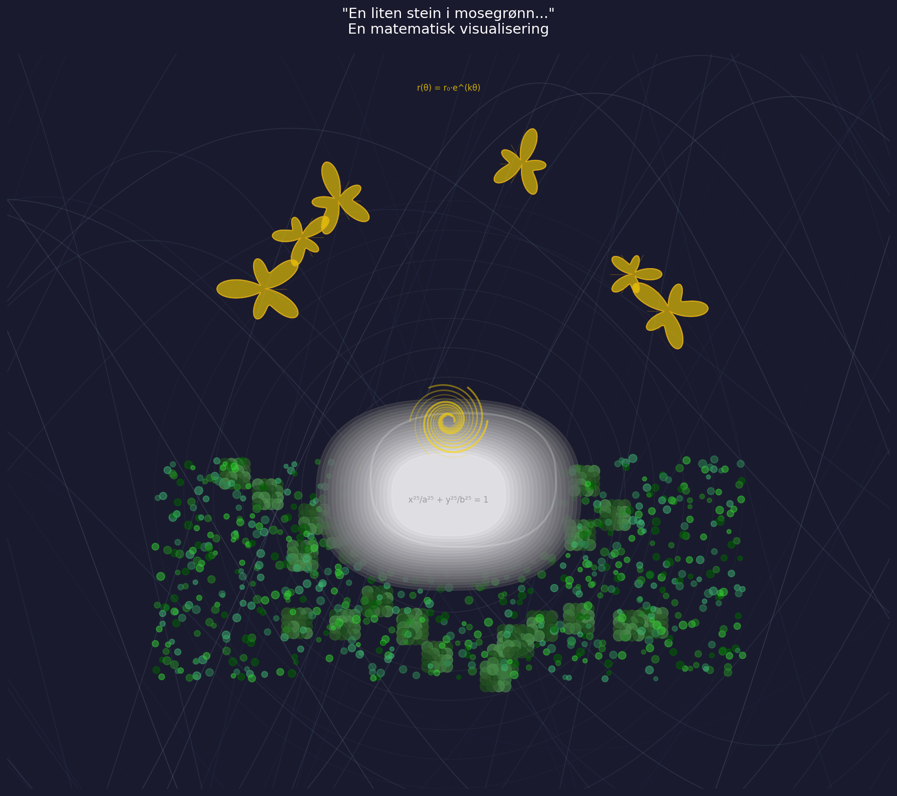

En liten stein i mosegrønn, drømmer om en gyllen lønn. Han ligger stille, kald og grå, mens verden suser rastløst på.

import matplotlib.pyplot as plt
import numpy as np
from matplotlib.patches import Ellipse, Circle, Polygon
from matplotlib.collections import PatchCollection
import matplotlib.colors as mcolors
# Create figure with dark background
fig, ax = plt.subplots(figsize=(14, 11), facecolor='#1a1a2e')
ax.set_facecolor('#1a1a2e')
# The rushing world - restless parametric curves in background
np.random.seed(42)
x_world = np.linspace(-15, 15, 2000)
for i in range(40):
freq = 0.2 + np.random.random() * 0.3
amp = 4 + np.random.random() * 6
phase = np.random.random() * 2 * np.pi
y_world = np.sin(x_world * freq + phase) * amp + np.sin(x_world * 0.1) * 3
alpha = 0.15 - i * 0.003
color = plt.cm.Blues(0.3 + i * 0.015)
ax.plot(x_world, y_world, color=color, alpha=max(alpha, 0.02), linewidth=0.8)
# Time waves - representing "verden suser rastløst på"
t = np.linspace(0, 4*np.pi, 500)
for i in range(15):
x_wave = t - 10 + i * 0.5
y_wave = np.sin(t + i * 0.4) * (2 + 0.5*np.sin(t * 0.5))
ax.plot(x_wave, y_wave - 8, color='lightsteelblue', alpha=0.2, linewidth=0.6)
# Moss texture - green fractal-like pattern
def moss_fractal(x_center, y_center, size, depth, ax):
if depth == 0 or size < 0.05:
circle = Circle((x_center, y_center), size,
color=np.random.choice(['#2d5a27', '#3d7a3d', '#4a8c4a', '#1e4d1e']),
alpha=0.7)
ax.add_patch(circle)
else:
for dx, dy in [(0.3, 0.3), (-0.3, 0.3), (0.3, -0.3), (-0.3, -0.3)]:
moss_fractal(x_center + dx*size, y_center + dy*size, size*0.5, depth-1, ax)
# Generate moss around the stone
for _ in range(30):
x_moss = np.random.uniform(-3, 3)
y_moss = np.random.uniform(-2.5, 0.5)
if np.sqrt(x_moss**2 + y_moss**2) > 1.2: # Outside stone
moss_fractal(x_moss, y_moss, 0.3, 2, ax)
# Dense moss carpet
for _ in range(800):
x_m = np.random.uniform(-4, 4)
y_m = np.random.uniform(-2.5, 0.5)
if np.sqrt(x_m**2 + y_m**2) > 1.0:
size = np.random.uniform(0.02, 0.08)
color = np.random.choice(['#228B22', '#2E8B57', '#006400', '#32CD32', '#3CB371'])
ax.scatter(x_m, y_m, s=size*800, c=color, alpha=0.5, marker='o')
# The stone - superellipse (Lamé curve) representing "ligger stille, kald og grå"
theta = np.linspace(0, 2*np.pi, 500)
n = 2.5 # superellipse exponent
a, b = 1.8, 1.3 # semi-major and semi-minor axes
x_stone = a * np.sign(np.cos(theta)) * (np.abs(np.cos(theta)))**(2/n)
y_stone = b * np.sign(np.sin(theta)) * (np.abs(np.sin(theta)))**(2/n)
# Stone gradient
for i in range(20):
scale = 1 - i * 0.03
gray_val = 0.35 + i * 0.03
ax.fill(x_stone * scale, y_stone * scale,
color=(gray_val, gray_val, gray_val+0.02),
alpha=0.4, zorder=10+i)
# Stone highlight (cold aspect)
ax.plot(x_stone * 0.7 + 0.2, y_stone * 0.7 + 0.2, color='white', alpha=0.2, linewidth=2, zorder=30)
# The golden dream - Fibonacci spiral representing "drømmer om en gyllen lønn"
def golden_spiral(x0, y0, scale, rotation, color_start):
phi = (1 + np.sqrt(5)) / 2 # Golden ratio
theta_spiral = np.linspace(0, 4*np.pi, 1000)
r = scale * np.exp(0.15 * theta_spiral)
x_sp = x0 + r * np.cos(theta_spiral + rotation)
y_sp = y0 + r * np.sin(theta_spiral + rotation)
return x_sp, y_sp
# Multiple dream spirals rising from stone
for i in range(6):
rotation = i * np.pi / 3
x_sp, y_sp = golden_spiral(0, 0, 0.08, rotation, 'gold')
alpha = 0.6 - i * 0.08
ax.plot(x_sp, y_sp + 1, color='gold', alpha=max(alpha, 0.2), linewidth=2-i*0.2, zorder=40)
# Maple leaves (golden lønn) - mathematical leaf shapes
def maple_leaf_shape(x0, y0, scale, rotation):
t = np.linspace(0, 2*np.pi, 200)
# Maple-inspired parametric curve
r = scale * (0.5 + 0.3*np.cos(5*t) + 0.2*np.cos(3*t))
x = x0 + r * np.cos(t + rotation)
y = y0 + r * np.sin(t + rotation)
return x, y
# Floating golden maple leaves (the dream)
leaf_positions = [(2.5, 3), (-2, 3.5), (1, 4.5), (-1.5, 4), (3, 2.5), (-2.5, 2.8)]
for i, (lx, ly) in enumerate(leaf_positions):
x_leaf, y_leaf = maple_leaf_shape(lx, ly, 0.4 + i*0.05, i*np.pi/5)
ax.fill(x_leaf, y_leaf, color='gold', alpha=0.6, zorder=50)
ax.plot(x_leaf, y_leaf, color='goldenrod', linewidth=1, alpha=0.8, zorder=51)
# Leaf veins
for lx, ly in leaf_positions:
for angle in np.linspace(0, 2*np.pi, 6, endpoint=False):
x_end = lx + 0.3 * np.cos(angle)
y_end = ly + 0.3 * np.sin(angle)
ax.plot([lx, x_end], [ly, y_end], color='darkgoldenrod', linewidth=0.5, alpha=0.5, zorder=52)
# Stillness represented by concentric ripples around stone
for i in range(8):
circle = Circle((0, 0), 1.2 + i*0.4, fill=False,
color='lightgray', alpha=0.15-i*0.015, linewidth=0.5, zorder=5)
ax.add_patch(circle)
# Mathematical annotations
ax.text(0, -0.1, 'x²⁵/a²⁵ + y²⁵/b²⁵ = 1', fontsize=8, color='gray',
ha='center', alpha=0.7, zorder=60)
ax.text(0, 5.5, 'r(θ) = r₀·e^(kθ)', fontsize=8, color='gold',
ha='center', alpha=0.8, zorder=60)
# Title
ax.set_title('"En liten stein i mosegrønn..."\nEn matematisk visualisering',
fontsize=14, color='white', pad=20)
# Set limits and remove axes
ax.set_xlim(-6, 6)
ax.set_ylim(-4, 6)
ax.set_aspect('equal')
ax.axis('off')
# Add subtle frame
for spine in ax.spines.values():
spine.set_visible(True)
spine.set_color('#333333')
spine.set_linewidth(2)
plt.tight_layout()
plt.savefig(output_path, dpi=150, facecolor='#1a1a2e', edgecolor='none', bbox_inches='tight')execution_ok=True fallback_used=False image_ok=True